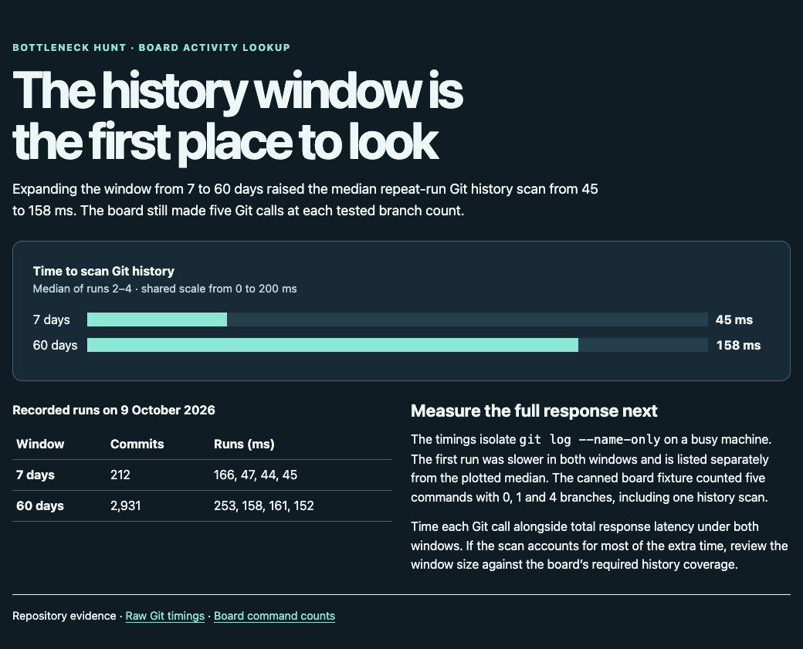
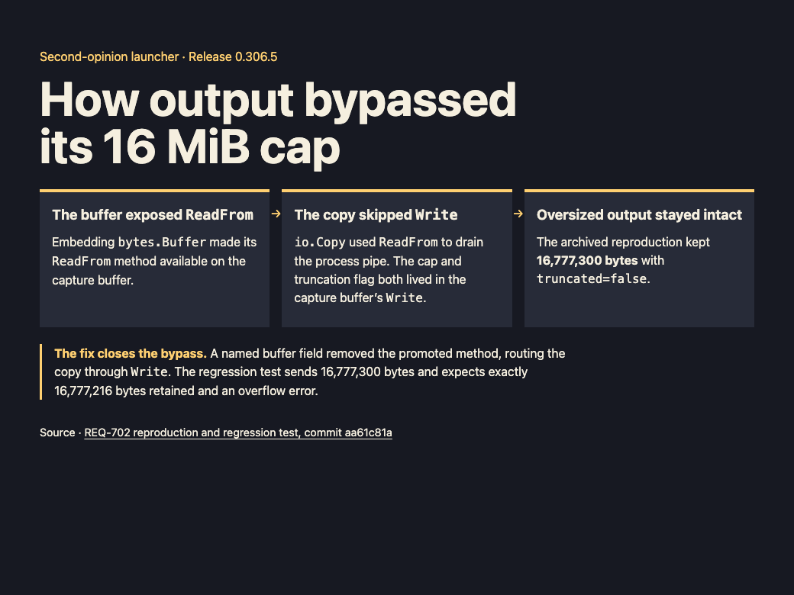
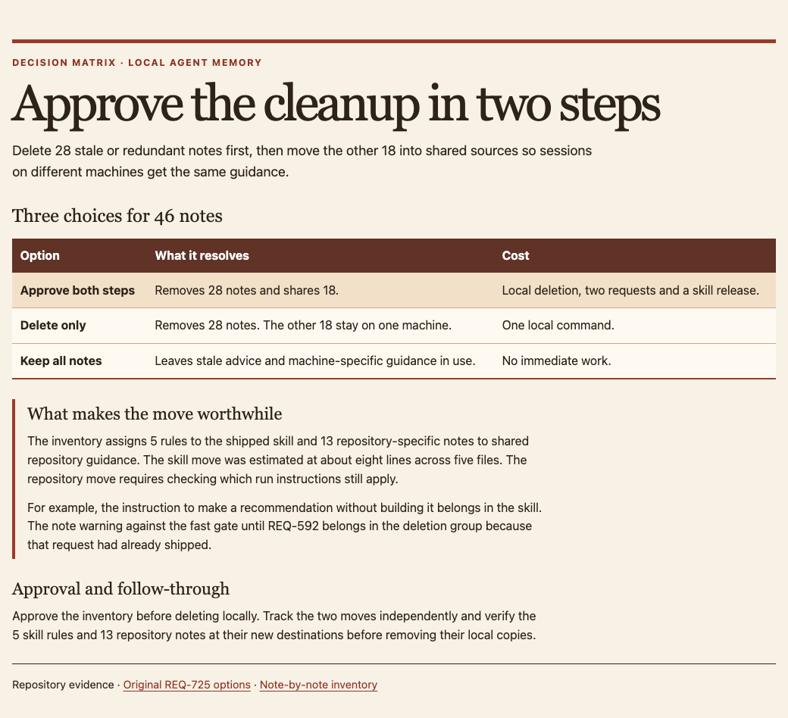
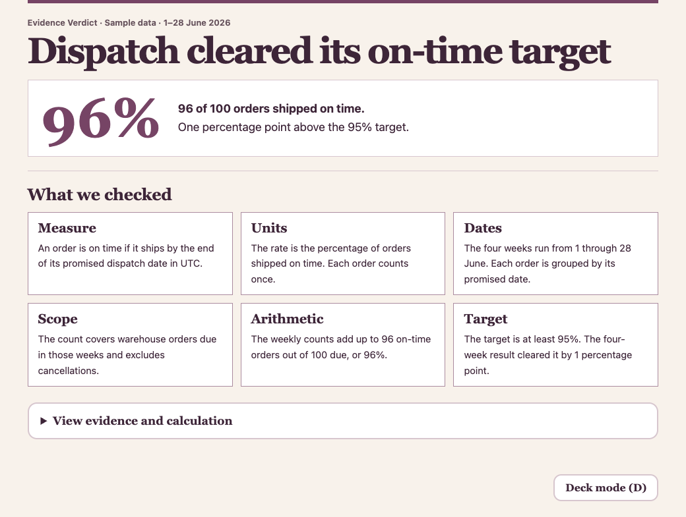
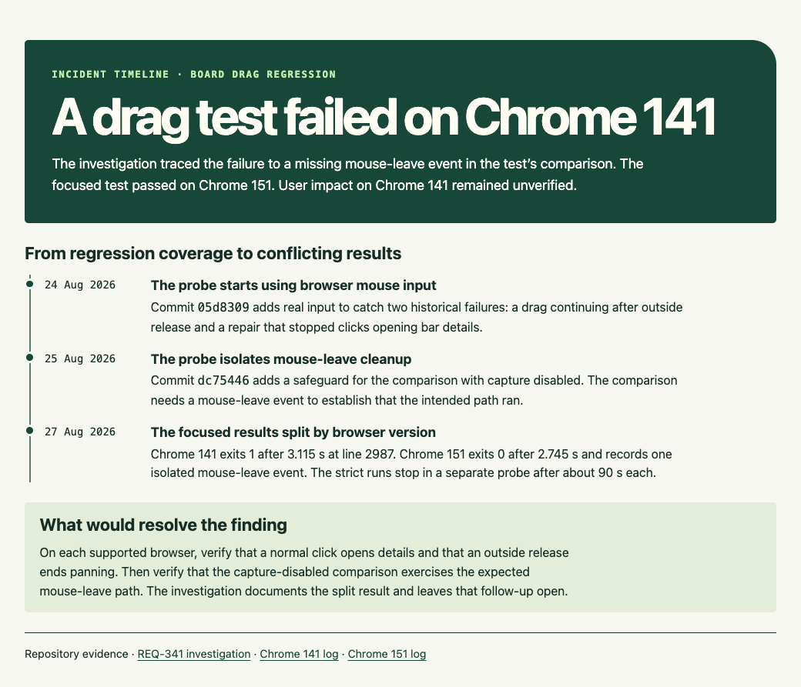
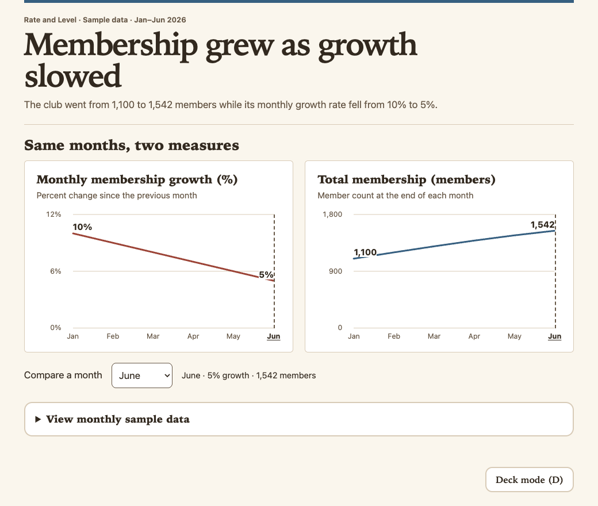
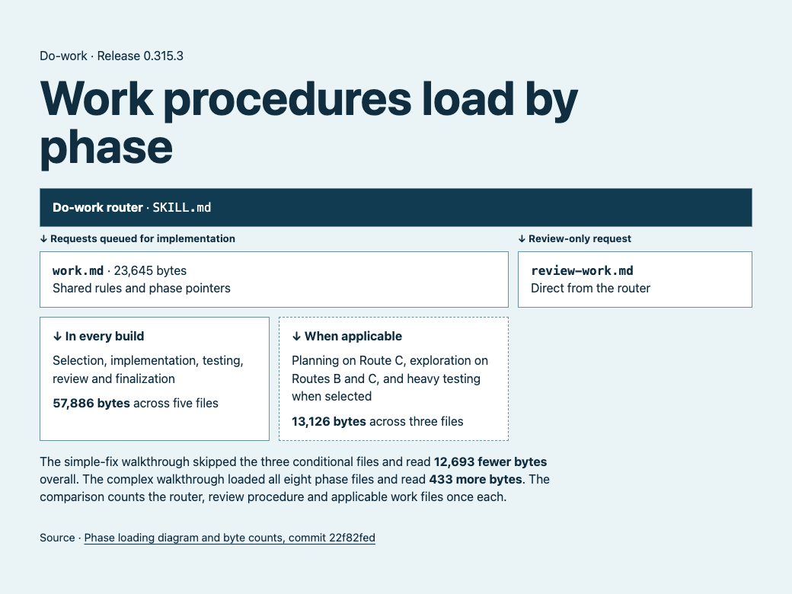

Enlarge ↗
Enlarge ↗
What changed between two readings?
Use this design
do-work-toolbox ai-report --design "Before and After"
- Keep the same measurement and units on both sides.
- Put the size and direction of the change next to the two readings.
- Say which behavior the capture establishes and where the evidence ends.

Enlarge ↗
Which measured cost should we investigate first?
Use this design
do-work-toolbox ai-report --design "Bottleneck Hunt"
- Keep call counts separate from elapsed time so a constant fan-out cannot hide rising work per call.
- Give bars a shared zero and keep the underlying runs visible.
- State what an end-to-end measurement must confirm before changing the system.

Enlarge ↗
How did one failure lead to the next?
Use this design
do-work-toolbox ai-report --design "Cause Chain"
- Name the mechanism at each step and make the order visible.
- Include the symptom that confirms the chain reached its final step.
- Show where the fix interrupts the sequence and what the regression test expects.
 Enlarge ↗
Enlarge ↗
Which parts account for the change in the total?
Use this design
do-work-toolbox ai-report --design "Changing Mix"
- Stack the parts in the same order each period and write the total above each column.
- Give each part a chart with the same scale and dates so changes are comparable.
- Hatch the unfinished period in both views and state how much of it has been counted.
 Enlarge ↗
Enlarge ↗
When does each activity peak, and what drives the busiest hour?
Use this design
do-work-toolbox ai-report --design "Daily Rhythm"
- Open with one combined view to show where the activities overlap.
- Separate the series into aligned rows with one scale and label the time and value of each peak.
- Give readers a single time control to inspect the same moment in every row.

Enlarge ↗
Which option earns approval given its cost, reach and trade-offs?
Use this design
do-work-toolbox ai-report --design "Decision Matrix"
- Put the same decision criteria in front of every option.
- Show the operational cost and the consequence of deferring in comparable terms.
- Use a counted inventory to explain why the preferred option wins.

Enlarge ↗
What evidence supports the verdict, and which checks did it pass?
Use this design
do-work-toolbox ai-report --design "Evidence Verdict"
- Give the verdict in one sentence and include the figure that settles it.
- Name the checks so readers can see which definitions, dates and calculations support the judgment.
- Keep the source rows and the calculation behind one disclosure.

Enlarge ↗
How did a regression develop, and what did the investigation establish?
Use this design
do-work-toolbox ai-report --design "Incident Timeline"
- Order dated changes and observations, then put the evidence beside each event.
- Separate failure in a test safeguard from confirmed user impact.
- Close with the evidence required to resolve the open incident.

Enlarge ↗
How can a growth rate fall while the total keeps rising?
Use this design
do-work-toolbox ai-report --design "Rate and Level"
- Put each measure in its own chart with its units in the heading and matching dates on both horizontal axes.
- Label both endpoints in the plots so the reader can see which way each measure moved.
- Give readers one date control to compare the exact values for the same period.

Enlarge ↗
Where do paths branch, and what does each one depend on?
Use this design
do-work-toolbox ai-report --design "System Map"
- Start with the shared entry and label each branch with its routing condition.
- Group files that load under the same rule and show their combined footprint.
- Compare representative routes to explain what the architecture saves.